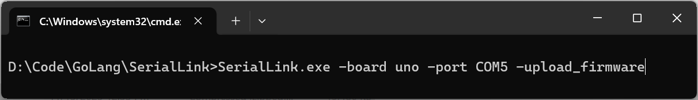
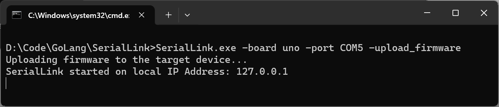

The first thing, before you connect any board, is to allow the connection to websockets from the SSL secured IDE. You can do this by clicking the settings or lock icon in the URL address bar and then click the Site settings button.
Now you have to allow Insecure content, so that the SerialLink application, which does not uses the SSL and is running locally can connect to the CodeSkool IDE, which is a SSL secured website and running on HTTPS connection.
Once you have allowed the insecure content, you need to refresh the CodeSkool IDE, by pressing the Ctrl + F5 keys. Now you are good to go and connect the Arduino UNO to CodeSkool IDE.
To get started with Arduino UNO in CodeSkool, you need to first download the SerialLink application. Go to the Boards menu at the top and select Arduino UNO in the boards manager. Click the "Upload Firmware" button and you will be prompted to download the uno.zip file.
Once the download is complete, unzip the file and you will find the SerialLink application inside the folder.
Now click the "Add extension" button in the boards manager to add the Arduino UNO CodeSkool Scratch extension. The Arduino extension will get added to the CodeSkool toolbox
Run the downloaded SerialLink application and pass the COM port of the Arduino UNO as an argument like: SerialLink.exe COM5
or else select the port from the list of available ports shown.After you have entered the correct COM port of Arduino UNO, it will upload the firmware to the Arduino UNO and you will see the following screen.

Now you can connect the Arduino UNO to CodeSkool by going to the Connect menu and click the Connect board menu item. Then you have to click Connect manually button in the pop up dialog and enter the local IP address: 127.0.0.1 in the text box and click OK.
It will now show you, that the device is connected. Close the dialog and you are ready to use the Arduino UNO in CodeSkool.
Now use the Arduino UNO blocks to write your first program to blink the LED connected to pin 13 of the Arduino UNO. Drag the following Scratch blocks from the toolbox to the workspace to complete your program as shown below.
Click the Green Flag button above stage to run the program. You will see the LED blinking.
Hurray! You have successfully connected the Arduino UNO to CodeSkool IDE and written your first program.